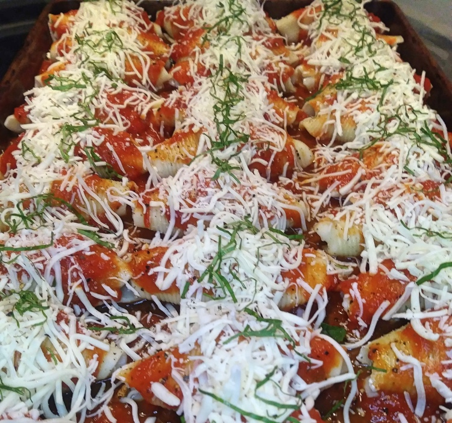

Intermediate Recipe 1

Important Techniques
- Sautéing Onions and Garlic: Heat butter in a pan, then cook onions followed by garlic, adjusting heat as needed.
- Wilt Spinach: Add fresh spinach to the pan and cook until wilted, then let cool.
- Bake at 365°F immediately, or store for later baking. Adjust cooking time if frozen.
- Ensure the dish reaches an internal temperature of 165°F for safety.
- In a frying pan, heat on high, add butter, once melted add the onion, cook for 2 minutes.
- Reduce the heat to medium and add the fresh garlic, cook for 1 minute.
- Add the fresh spinach and cook until wilted, once cooked, remove and allow mixture to cool down.
- In a separate bowl add ricotta, cooked/cooled sausage, egg, and Italian seasoning mix together. Then fold in the spinach-onion mixture into the ricotta (make sure it’s cooled).
- Get your sheet pan out or whatever other vessels you will cook the shells in.
- Lay down a few spoons full of marinara sauce on the bottom to prevent shells from sticking.
- Take one of the cooked and cooled pasta shells; place 1 tablespoon of the mixture in the shell, fold it closed, and place open side down in the pan.
- Repeat until all shells or mixture is done.
- Layer some sauce on each shell and then sprinkle some shredded cheese and fresh parsley on top.
- Cook in the oven right away at 365 degrees F for 45 minutes or place in the fridge or freezer covered until your ready to cook.
- If frozen allow 90+ minutes to cook until they reach 165F
Recipe List
- 1/2 Lb. of Ground Sausage (cooked, drained)
- 1/2 White Onion (minced)
- 2 Cloves of Garlic (minced)
- 4 Cups of Spinach
- 1 Teaspoon of Butter
- 1 Egg
- 1 Box Pasta Shells (cooked, cooled)
- 2 Cups of Low-fat Ricotta Cheese
- 2 Cups of Marinara Sauce
- 2 Cups of Shredded Mozzarella
- 1 Tablespoon of Dry Italian Seasoning